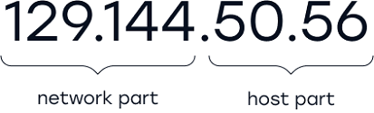
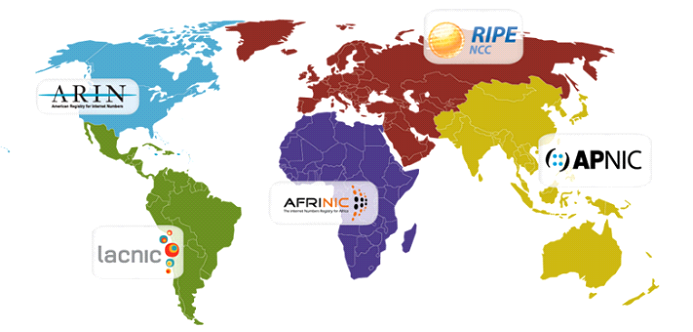
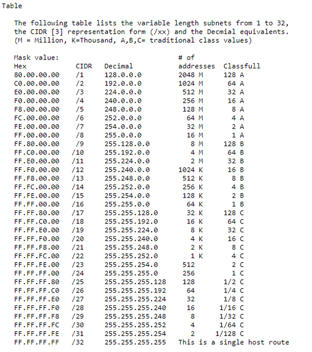
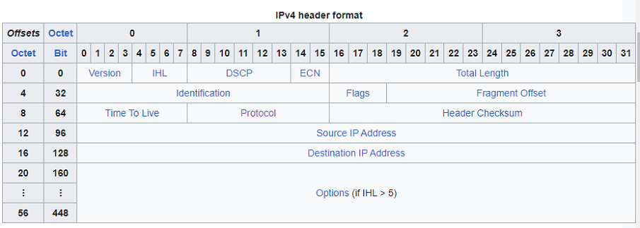

IPv4, adresování - formát paketu, maska, podsíť. porovnání s IPv6
IPv4 je v informatice cislo, které jednoznačně identifikuje síťové rozhraní v počítačové síti, která používá IP protokol. Funguje na třetí vrstvě OSI modelu.
je 32 bitová a dělí se na 4 políčka (oktety) oddělené tečkou. V každém oktetu může být číslo v rozsahu 0 - 255 např tedy: 192.168.1.2
Rozsahy ip adres se historicky rozdávaly a dělily na třídy A,B,C,D,E
Class
First Octet Range (Decimal)
Subnet Mask
Usable Addresses
Hosts per Network
Broadcast Address
Class A
0 - 127
255.0.0.0
16,777,214
16,777,212
Last address in range (e.g., 127.255.255.255)
Class B
128 - 191
255.255.0.0
65,534
65,532
Last address in range (e.g., 191.255.255.255)
Class C
192 - 223
255.255.255.0
256
254
Last address in range (e.g., 223.255.255.255)
Ip adresa se zkládá ze tří částí, z network part, host part a subnet mask. Subnet mask rozhodujeme na jakém bitu končí network part tedy po jakém bitu začíná host part.
Subnet mask se může psát ve tvaru /16, 255.255.0.0 nebo 11111111.11111111.00000000.0000000

Ip adresy globálně spravuje Internet Assigned Numbers Authority (IANA), ta své rozsahy rozdělí mezi další spolešnosti které následné rozsahy operují nad danými světadíly.

Ip adresa má dvě vlastnosti kromě toho že identifikuje hosta (síťový prvek) v komunikaci na třetí vrstvě OSI modelu a poskytuje nám polohu hosta v síti a možnost vytvořit cestu k danému hostu při komunikaci s ním.
Internet Protocol verze 4 byl vyvinut již v roce 1983 v ARPANETU (kromě nezjnámějsích protokolů v4 a v6 existuje také v1, v2, v3, InternetStream protocol (v5), v7 (TP/IX" The Next Internet), v8(PIP = the P internet Protocol), V9 (TUBA - TCP & Udp with Big Addresses))
První adresa se využívá jako adresa sítě a poslední adresa jako broadcast adresa.

Rozsahy rezervované
IPv4 adresy vyhranili speciální bloky adres pro speciální způsob užití.
Privátní síť:
Address block
Address range
Number of addresses
Scope
Description
10.0.0.0/8
10.0.0.0–10.255.255.255
16 777 216
Private network
Used for local communications within a private network
100.64.0.0/10
100.64.0.0–100.127.255.255
4 194 304
Private network
Shared address space for communications between a service provider and its subscribers when using a carrier-grade NAT
172.16.0.0/12
172.16.0.0–172.31.255.255
1 048 576
Private network
Used for local communications within a private network
192.0.0.0/24
192.0.0.0–192.0.0.255
256
Private network
IETF Protocol Assignments, DS-Lite (/29)
192.168.0.0/16
192.168.0.0–192.168.255.255
65 536
Private network
Used for local communications within a private network
198.18.0.0/15
198.18.0.0–198.19.255.255
131 072
Private network
Used for benchmark testing of inter-network communications between two separate subnets
Sítě používané pro dokumentaci:
Address block
Address range
Number of addresses
Scope
Description
192.0.2.0/24
192.0.2.0–192.0.2.255
256
Documentation
Assigned as TEST-NET-1, documentation and examples
198.51.100.0/24
198.51.100.0–198.51.100.255
256
Documentation
Assigned as TEST-NET-2, documentation and examples
203.0.113.0/24
203.0.113.0–203.0.113.255
256
Documentation
Assigned as TEST-NET-3, documentation and examples
233.252.0.0/24
233.252.0.0–233.252.0.255
256
Documentation
Assigned as MCAST-TEST-NET, documentation and examples (Note that this is part of the above multicast space.)
Podsíťové rozsahy:
Address block
Address range
Number of addresses
Scope
Description
169.254.0.0/16
169.254.0.0–169.254.255.255
65536
Subnet
Used for link-local addresses between two hosts on a single link when no IP address is otherwise specified, such as would have normally been retrieved from a DHCP server
255.255.255.255/32
255.255.255.255
1
Subnet
Reserved for the "limited broadcast" destination address
Loopback rozsah:
Address block
Address range
Number of addresses
Scope
Description
127.0.0.0/8
127.0.0.0–127.255.255.255
16 777 216
Host
Used for loopback addresses to the local host
Aktuální síť:
Address block
Address range
Number of addresses
Scope
Description
0.0.0.0/8
0.0.0.0–0.255.255.255
16 777 216
Software
Current (local, "this") network
Speciální případy využívané na internetu:
Address block
Address range
Number of addresses
Scope
Description
192.88.99.0/24
192.88.99.0–192.88.99.255
256
Internet
Reserved. Formerly used for IPv6 to IPv4 relay (included IPv6 address block 2002::/16).
224.0.0.0/4
224.0.0.0–239.255.255.255
268 435 456
Internet
In use for multicast (former Class D network)
240.0.0.0/4
240.0.0.0–255.255.255.254
268 435 455
Internet
Reserved for future use (former Class E network)
Packet IPv4
Packet header se pohybuje s velikostí od 20 do 60 bajtů. Celý packet může mít velikost až 2^16, tedy 65536 bajtů. Tedy payload může mít velikost odpovídající maximální velikosti packetu zmenšené o header(65475 - 65515)
Na IPv4 síti můžeme posílat tři druhy packetů:
Unicast (one to one) sending packet to one host.
Multicast (one to many of many) sending packet to group of hosts.
Broadcast (one to many) sending packet to all hosts on subnet.

Version
The first header field in an IP packet is the four-bit version field. For IPv4, this is always equal to 4.
Internet Header Length (IHL)
The IPv4 header is variable in size due to the optional 14th field (options). The IHL field contains the size of the IPv4 header, it has 4 bits that specify the number od 32-bit words in the header. The minimum value for this field is 5, which indicates a length of 5 x 32 bits = 160 bits = 20 bytes. As a 4-bit field, the maximum value is 15; this means that the maximum size of the IPv4 header is 15 x 32 bits = 480 bits = 60 bytes.
Differentiated Services Code Point (DSCP)
Originally defined as the type of service (ToS), this field specifies differentiated services (DiffServ) per RFC 2474. Real-time data streaming makes use of the DSCP field. An example is Voice over IP (VoIP), which is used for interactive voice services.
Explicit Congestion Notification (ECN)
This field is defined in RFC 3168 and allows end-to-end notification of network congestion without dropping packets. ECN is an optional feature available when both endpoints support it and effective when also supported by the underlying network.
Total Length
This 16-bit field defines the entire packet size in bytes, including header and data. The minimum size is 20 bytes ( header without data) abd the maximum is 65,535 bytes. all hosts are required to be able to reassemble datagrams of size up to 576 bytes, but most modern hosts handle much larger packets. Links may impose further restrictions on the packet size, in which case datagrams must be fragmented. Fragmentation in IPv4 is performed in either the sending host or in routers. Reassembly is performed at the receiving host.
Identification
This field is an identification field and is primarily used for uniquely identifying the group of fragments of a single IP datagram. Some experimental work has suggested using the ID field for other purposes, such as for adding packet-tracing information to help trace datagrams with spoofed source addresses, but RFC 6864 now prohibits any such use.
Flags
A three-bit field follows and is used to control or identify fragments. They are (in order. from most significant to least significant):
bit 0: Reserved; must be zero.
bit 1: Don't Fragment(DF)
bit 2: More Fragments (MF)
If the DF flag is set, and fragmentation is required to route the packet, then the packet is dropped. This can be used when sending packets to a host that does not have resources to perform reassembly of fragments. It can also be used for path MTU discovery, either automatically by the host IP software, or manually using diagnostic tools such as ping or traceroute.
For unfragmented packets, the MF flag is cleared. For fragmented packets, all fragments except the last have the MF flag set. The last fragment has a non-zero Fragment Offset field, differentiating it from unfragmented packet.
Fragment offset
This field specifies the offset of a particular fragment relative to the beginning of the original unfragmented IP datagram. The fragmentation offset can be from 0 to 8191 (from (20 - 1) to (213 - 1)). Fragments are specified in units of 8 bytes, which is why fragment length must be a multiple of 8. Therefore, the 13-bit field allows a maximum offset of (2^13 - 1) x = 65,528, with the header length included (65,528 + 20 = 65,548 bytes), supporting fragmentation of packets exceeding the maximum IP length of 65,535 bytes.
Time to live (TTL)
An eight-bit time to live field limits a datagram's lifetime to prevent network failure in the event of a routing loop. It is specified in seconds, but time intervals less than 1 second are rounded up to 1. In practice, the field is used as a hop count - when the datagram arrives at a router, the router decrements the TTL field by one. When the TTL field hits zero, the router discards the packet and typically send an ICMP time exceeded message to the sender.
The program traceroute sends messages with adjusted TTL values and uses these ICMP time exceeded messages to identify the routers traversed by packets from the source to the destination.
Protocol
This field defines the protocol used in the data portion of the IP datagram. IANA maintains a list of IP protocol numbers as directed by RFC 790.
Header checksum
The 16-bit IPv4 header checksum field is used for error checking of the header. When a packet arrives at a router, the router calculates the checksum of the header and compares it to the checksum field. If the values do not match, the router discards the packet. Errors in the data field must be handled by the encapsulated protocol. Both UDP and TCP have separate checksums that apply to their data.
When a packet arrives at a router, the router decreases the TTL field in the header. Consequently, the router must calculate a new header checksum, the value of the checksum field is zero.
Source address
This 32-bit field is the IPv4 address of the sender of the packet. Note that this address may be changed in transit by a network address translation device.
Destination address
This 32-bit field is the IPv4 address of the receiver of the packet. As with the source address, this may be changed in transit by a network address translation device.
Options
The options field is not often used. Packets containing some options may be considered as dangerous by some routers and blocked. Note that the value in the IHL is greater than 5 (i.e., it is from 6 to 15) it means that the options field is present and must be considered. The list of options may be terminated with an EOOL (End of Options List, 0x00) option; this is only necessary if the end of the options would not otherwise coincide with the end of the header. The possible options that can be put in the header are as follows:
Field
Size (bits)
Description
Copied
1
Set to 1 if the options need to be copied into all fragments of a fragmented packet.
Option class
2
A general options category. 0 is for control options, and 2 is for debugging and measurement. 1 and 3 are reserved.
Option number
5
Specifies an option.
Option length
8
Indicates the size of the entire option (including this field). This field may not exist for simple options.
Option data
Variable
Option-specific data. This field may not exist for simple options.
Data
The packet payload is not included in the checksum. It's contents are interpreted based on the value of the Protocol header field.
List of IP protocol number contains a complete list of payload protocol types. Some of the common payload protocols include:
Protocol number
Protocol Name
Abbreviation
1
Internet Control Message Protocol
ICMP
2
Internet Group Management Protocol
IGMP
6
Transmission Control Protocol
TCP
17
User Datagram Protocol
UDP
41
IPv6 Encapsulation
ENCAP
89
Open Shortest Path First
OSPF
132
Stream Control Transmission Protocol
SCTP
IPv4 compared to IPv6
IPv4
IPv6
32-bit address length
128-bit address length
Supports Manual and DHCP address configuration.
Supports Auto and renumbering address configuration.
End to end connection integrity is Unachievable.
End to end connection integrity is Achievable.
Can generate 4.29x109 address space. 232
It can produce address space of 3.4x1038. 2128
The security feature is dependent on the application.
IPSEC is an inbuilt security feature in the IPv6 protocol.
Address representation of IPv4 is in decimal.
Address representation of IPv6 is in Hexadecimal.
Fragmentation performed by Sender and forwarding routers.
Fragmentation is only performed only by the sender.
Packet flow identification is not available.
IPv6 packet flow identification is available and uses the flow label field in the header.
Checksum field is available.
Checksum field is not available.
Has a broadcast Message Transmission Scheme.
Multicast and Anycast message transmission scheme is available.
Encryption and Authentication not provided.
Encryption and Authentication provided
Has a header of 20-60 bytes.
Has a header of 40 bytes fixed.
Can be converted to IPv6.
Not all IPv6 can be converted to IPv4.
Consists of 4 fields which are separated by dots (.)
Consists of 8 fields, which are separated by colon (:)
Divided into five different classes. Class A,B,C,D,E.
Does not have any classes of the IP address.
Supports VLSM (Variable Length subnet mask).
Does not support VLSM.
Example: 172.72.16.32
Example: 2001:0000:3238:DFE1:0063:0000:0000:FEFB
Benefits of IPv6
The recent Version of IP IPv6 has a greater address space than IPv4. which is required for expanding the IP Connected Devices. IPv6 has 128 bit IP Address rather abd IPv4 has a 32-bit Address.
Improved Security: IPv6 has some improved security which is built in with it. IPv6 offers security like Data Authentication, Data Encryption, etc. Here, an Internet Connection is more secure.
Simplified Header Format: As compared to IPv4, IPv6 has a simpler and more effective header Structure, which is more cost-effective and also increases the speed of Internet Connection.
Prioritize: IPv6 contains stronger and more reliable support for QoS features, which helps in increasing traffic over websites and increases audio and video quality on pages.
Improved Support for Mobile Devices: IPv6 has increased and better support for Mobile Devices. It helps in making quick connections over other Mobile Devices and in a safer way than IPv4.